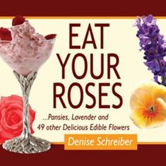

Book Reviews

Cooking With Flowers
Miche Bacher
Overview
Here are more than 100 recipes that will bring beautiful flower-filled dishes to your kitchen table! This easy-to-use cookbook is brimming with scrumptious botanical treats, from sweet violet cupcakes, pansy petal pancakes, daylily cheesecake, and rosemary flower margaritas to savory sunflower chickpea salad, chive blossom vinaigrette, herb flower pesto, and mango orchid sticky rice.
Alongside every recipe are tips and tricks for finding, cleaning, and preparing edible blossoms. You’ll also learn how to infuse vinegars, vodkas, sugars, frostings, jellies and jams, ice creams, and more with the color and flavor of your favorite flowers. Fresh from the farmers’ market or plucked from your very own garden, a world of delectable flowers awaits!
Review
By Helen Blunt, Blogmaster, Create with joy.
My first impression?
I truly believe this might be the most beautiful cookbook I have ever seen!
Seriously.
Even if you never make a single recipe out of it, if you love cookbooks, you will want this book for Miana Jun’s gorgeous photography alone!
But – when you finish looking at the eye candy and actually start to read the book – I’m sure you’ll be fascinated by what you find!
The book opens by answering a few questions that are probably burning a hole in your brain:
- ❀Why eat flowers?
- ❀What do flowers taste like?
- ❀Are flowers good for you?
Next, Miche reviews the rules that govern flower eating.
Then, we dwelve into the heart of the book, where Miche discusses over 17 categories of flowers – including Lilacs, Orchids and Roses – and treats us to over 100 floral recipes we can eat!
Here’s a sampler of what you will find:
- ❀Imagine how refreshing Hibiscus Popsicles, Lilac Sorbet or Lavender Lemonade would taste on a hot summer day.
- ❀Envision how pretty and colorful Spring Tulip and Pea Shoot Salad, Pansy Petal Pancakes and Passion fruit Orchid Tartlets would be!
- ❀Picture the delight in your guests’ eyes when you serve Dandelion Ham and Egg Cups, Calendula Cornbread, and Violet Flower Cupcakes!
Are you starting to get the sense that you really need this book?
Miche includes a wealth of information pertaining to flowers in this book for your culinary inspiration, but she doesn’t stop there. At the end of the book, she also includes a section entitled The Basics: Simple Recipes for Stocking Up. There, you’ll find her “tried and true recipes” that work for most edible flowers – as well as a list of sources to get you started!
As you might have gathered, I am totally enamored by Quirk Book’s latest cookbook. Cooking With Flowers has inspired me to step outside of my comfort zone and to anticipate trying some new creations this summer. The fact that these recipes look like miniature works of art is a beautiful bonus!
Eat your roses
Denise Schreiber
Overview
This light-hearted, full-color illustrated gift book balances edible flower history and lore with proper handling and preparation techniques, and 50+ recipes (from appetizers and drinks to main dishes and desserts). Eat Your Roses shows us how to look beyond the veggie patch for great food ideas, and check out our flowerbeds. Hardcover with concealed wire binding. Full-color photos throughout.
Review
By Paris Wolfe, Blogmaster, The Herb Society of America.
While I love a carpet of petite thyme blossoms, I’m picky about which herbs I want to flower. Borage, chives and lavender are nearly useless without blooms. But, rosemary and oregano pause plant production while flowering. Basil and mint turn off, get leggy and drop leaves as blossoms pull plant energy. Bee balm and pineapple sage are nearly spent after brightly blooming.
My attitude recently shifted when I picked up Eat Your Roses… Pansies, Lavender and 49 other Delicious Edible Flowers by Denise Schreiber.
As promised, it details edible flowers with photos, descriptions, sense appeal and uses. Occasionally you’ll find warnings, such as: "Dried lavender buds that are used for sachets are often treated with oils to preserve the scent. Make sure you buy culinary lavender only" OR "You should not consume chamomile if you are taking certain medications, such as blood thinners."
And, each entry offers uses, like making jelly and jam with lemon verbena flowers.
Naturally, most often, flowers can be used as a replacement for the herb. While the basil aesthetic doesn’t work with caprese salad, the blooms are perfect in pesto. And, with marjoram, the delicate flowers lose flavor when cooked. Meanwhile its cousin, oregano, has flower power.
Of the recipes listed in back, I’m most likely to try Rose Petal Jam and Asian Noodles Vinaigrette with Nasturtiums. Oh, and maybe Lemon Verbena Salmon. Conveniently, for cooks, the book is spiral-bound with a hard cover and it lays open to any page. This year, instead of pinching back to prevent flowering, I’ll be anticipating blooms.
The Edible Flower Garden
Rosalind Creasy
Overview
Learn how to grow lovely and fragrant flowers then use them to create delicious meals with this beautifully illustrated flower gardening and cooking book.
Anyone who picks up The Edible Flower Garden will be tempted to grow, harvest, and sample at least a few of the more than forty varieties of edible flowers. Among them you'll find more familiar food plants—dill and mustard, for example—in addition to common flowers, such as tulips or roses. Author Rosalind Creasy's stunning photography and detailed plans for an edible flower garden make this a must-gave book for any flower gardener or home chef.
Come along with Creasy on a tour in colorful pictures and careful diagrams and descriptions of her own flower gardens. Included is a tour of the edible flower gardens of Alice Waters famed Chez Panisse restaurant.
Creasy catalogues each variety of flower and how to grow it, plus gives a myriad of delectable ideas on how to use the flower from candied violets and roses to decorate appetizers and cakes, to nasturtiums for a colorful shrimp salad, to day lily buds, pink clover and wild mustard flowers that are tossed together in a spectacular stir-fry.
Favorite Recipes Include:
- ❀Flower Butters
- ❀Candied Flowers
- ❀Tulip and Endive Appetizer
- ❀Pineapple Sage Salsa
- ❀Rose Petal Syrup
- ❀Lavender Ice Cream
- ❀And many more…
Review
By Jean Seaman, www.goodreads.com
I'm growing edible flowers for 2 restaurants now. I really needed reliable information on what flowers are edible; this author gave information that explained why I kept finding the identical lists on the internet and nobody who had actually used/eaten many of the flowers. This book had information on flowers actually researched and personally tried by the author, not plagiarized hearsay from some unknown and untried source.
Edible Flowers
25 recipes and an A-Z pictorial directory of culinary flora
Kathy Brown
Overview
Keen gardeners and avid cooks will be thrilled by the imaginative use of flowers outdoors and indoors, and will consult this authoritative reference and stunning visual source book for years to come.
This hardback sumptuous book is rarely available as there is now a paperback version, but I have still have a few copies. It has both gardening and cookery recipes including ideas for growing and eating the flowers of roses, lavender, hyssop, nasturtiums, courgettes, sweet cicely, basil, sage, rosemary and thyme... to name just a few! It includes a fascinating history section and is teaming with many mouth watering concoctions.
Rose petal cake and rose petal sorbet are just the beginning! Try baked mushrooms topped with thyme flowers, garlic, oil and breadcrumbs, or the lightest of lunches with chive flower scrambled eggs. Creamy cowslip syllabub is another tempting idea.
Charles Campion writing in the Evening Standard on May 14th 2008 described it as the seminal reference book for the home cook.
BBC Gardener's World showed some of her ideas in October 2008.
Review
By Elizabeth Heligan, www.woollygreen.com
This one is delightful and unusual in that it is both a gardening guide and recipe collection. The vibrant photos by Michelle Garrett are inspiring and beautiful, there are over 25 planting schemes described in great detail – even the woolliest Woolly couldn’t get confused. The recipes are fantastic, so if you have any interest in eating and cooking with flowers, the book is really worth it.
My favorites: the spring planter of violets and a scented lavender basket all tuned into tasty dishes, but the pièce de résistance is the simply stunning beetroot and nasturtium salad. Impress your friends.
The Floral Baker
Cakes, Pastries and Breads
Frances Bissell
Overview
What could be more enticing than the aroma of floral-scented scones or cup cakes wafting through the kitchen? Floral essences have long been used to flavor cakes, and crystalized flowers to decorate them, but when Frances Bissell bakes with floral flavors she does much more than add a dash of rosewater here, a spoonful of rose petal jam there.
The floral cook sans pareil, Frances offers such delights as Mango and Jasmine Upside-Down Tart; Lavender and White Chocolate Caramel Cake; Saffron and Rosewater Biscuits; and Peach, Lavender and Almond Tart with Lavender Fudge Sauce. Your dentist may not approve, but you and your guests will...
Review
By Aller Kentisbeare, Maddocks Farm Organics, United Kingdom
This is Frances' second book on cooking with Edible Flowers (the other being The Scented Kitchen) and we love the fact that she actually uses the flowers as a culinary ingredient rather than placing a token viola on the side of a plate. The Floral Baker offer such delights as Lavender and White Chocolate Caramel Cake and Mango and Jasmine Upside-Down Tart. Savoury recipes are also on the menu with Wild Garlic Flower, Walnut and Cheese Biscuits; Lavender and Tomato Tart; Olive and Manchego Scones, and also one of my favourites Nasturtium and Pumpkins Seed Bread.
Giving easily-followed basic recipes for sponges, cupcakes, breads, scones, muffins and the other cornerstones of the baking repertoire, Frances Bissell enables both novice and experienced bakers to proceed confidently and produce delicious, creative treats.
The Scented Kitchen
Cooking with Flowers
Frances Bissell
Overview
Using flowers in the kitchen is growing massively in popularity, and this expanded new edition of Frances Bissell's widely acclaimed book allows readers to move beyond scattering a few petals on a salad to enjoy the scents and flavours of both wild and garden flowers such as lavender, elderflower, fennel and roses.
Her recipes include the simple - and highly effective - flavouring of basic ingredients that allows the cook to transform other dishes. Elderflower Vinegar, for example, lifts an ordinary green salad to a subtly perfumed treat, while Lavender-Flavoured Honey is as delicious on toast as it is when cooked with Roast Duck and Sesame Seeds.
Other highly original recipes include Braised Lamb Shanks with Carnation Sauce, Orange and Fennel Flower Sorbet, Mussels in Cider and Saffron, and Stuffed Chicken Breasts with Roses and Cucumber. And, just in case those toiling in the kitchen are in need of a pick-me-up, Frances also offers Frozen Elderflower Margarita, Lavender Julep and other flower-scented cocktails.
Review
This is an original review for The Gastronomer's Bookshelf.
The first section heading is "A brief and partial history of the scented kitchen" and very partial it is too, concentrating totally on England and English authors. There is certainly no mention of Ireland, Wales, Scotland or rural England, and definitely not France or the Middle Eastern countries, where flowers were and still are used in the making of syrups, pastries, creams and jams.
To inform us of the extensive use of flowers to flavour and decorate food in past centuries, Bissell refers to various manuscripts from the 16th to 18th Centuries, occasionally quoting passages from them when she wishes to make a particular point. She then refers to the three primary writers of cookery books of the Victorian era (Miss Acton, Mrs. Beeton and Mrs. Marshall) and discusses the absence of flowers in their recipes and the lack of any reference to flowers in mainstream 20th Century English cookery.
The second section is a discussion of equipment for drying, cooking and candying flowers, and techniques for extracting the flavour of flowers in various ways. Here you will find simple methods for making flower flavoured sugars, butters, syrups, custards, vinegars, vodkas, edible oils, and jellies. The flavoured and aromatic sugars, syrups, butters and custards may be incorporated into ice creams, desserts, cakes, biscuits and so on. In many instances, colour is imparted to food as well as flavour and aroma.
The third section consists of chapters for different flowers beginning with a discussion of the flower’s properties and continuing on to recipes for both sweet and savoury and hot and cold dishes. Many of these set my taste buds tingling and I will definitely try a few when the warm weather returns and the necessary plants are in bloom once again.
The flower garden has a limited number of plants with flowers that will impart flavour and perfume to foods so recipes using rose petals and lavender flowers predominate, for both sweet and savoury dishes.
Bissell states clearly at the start that the perfume and taste of lavender is her first love, and her wish to capture that perfume and incorporate it into her cooking was the beginning of her interest in using flowers in the kitchen. This shows in the number and variety of recipes that include lavender.
Flowers that are featured less frequently in recipes are fennel flowers, jasmine, clove pink, marigold, borage, violet and elderflower. There are others, including the delicate flavour and colour of saffron (though technically just the stigma of the flower, not the full flower) and the peppery flavour of nasturtium leaves.
The one obvious omission from the book is geranium, and that surprised me given its use in other countries and the extensive exposure to other cuisines that Bissell is said to have. Still, why quibble over one plant when there are riches to be had without it?
This is a stylish book. A slender paperback of 232 pages. The card stock used for the cover is delightfully smooth and satiny to hold and the design incorporates folded flaps resembling a dust jacket. The folded, rather than cut front edges give the book a substantial appearance and feel.
The author is well known in Britain, Europe and the USA and is a respected food writer, cook and author. She was food writer for The Times for thirteen years and her many articles, books and awards make an impressive list. Her writing is easy to read with simply worded but clear instruction accompanying the recipes.
If you are looking for a recipe book that is good to read with interesting additions to many standard food items, then you should definitely add this to your shopping list.